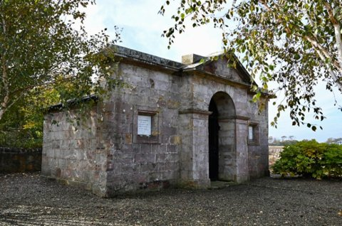
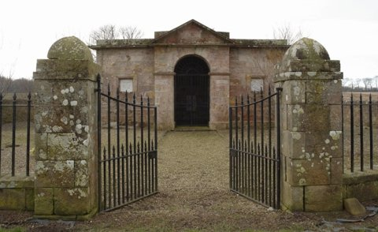

The Mausoleum
Back to GalleriesBuilt in 1821 as the Erskine family burial chamber. Access may be unavailable during special events

Mausoleum 1
Mausoleum 2Built in 1821 as the Erskine family burial chamber. Access may be unavailable during special events

Mausoleum 1
Mausoleum 2